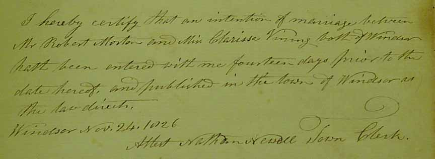
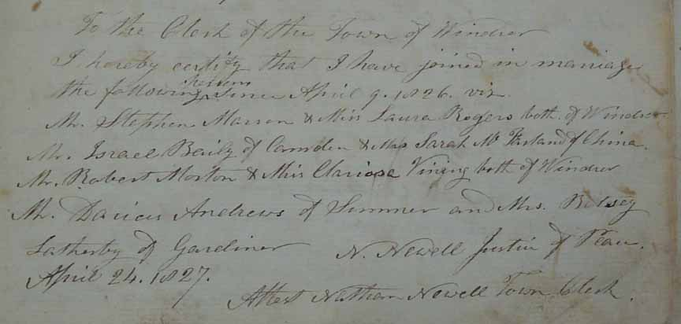
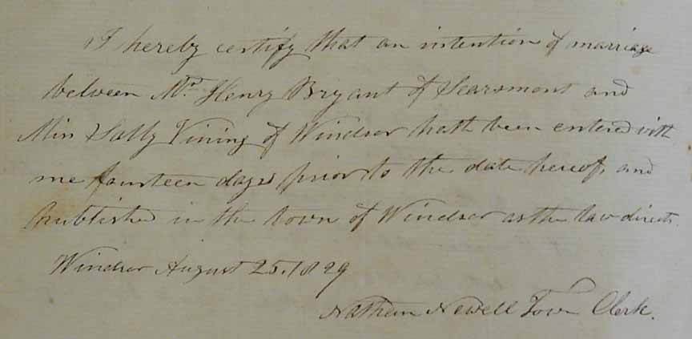
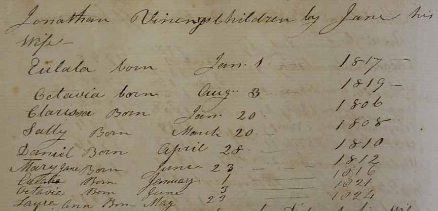
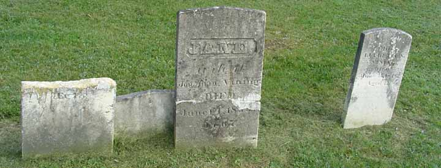
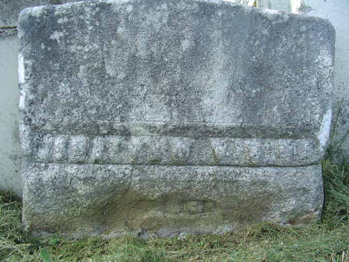
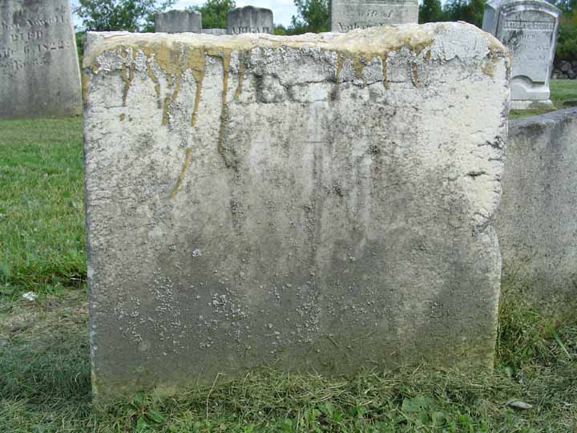
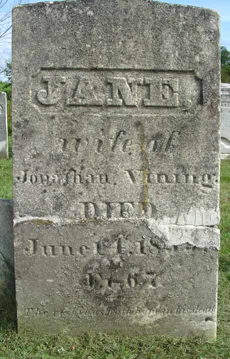
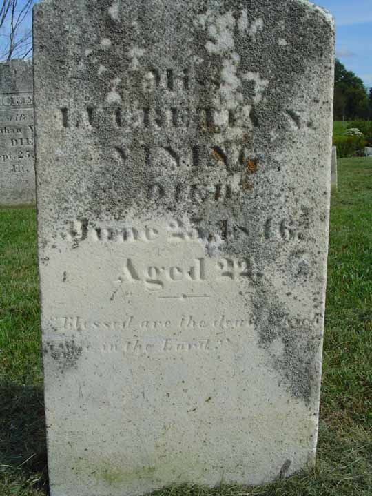

Marriage Data
Two documents related to the marriage of Clarissa Vining, daughter of Jonathan and Jane "Jennie" ([Gurrell?]) Vining, and Robert Morton. The first (from Windsor, Maine, record book 1, p. 375) reported that intentions of their marriage had been filed 14 days prior to 24 November 1826. The second (from Windsor, Maine, record book 1, p. 391) reported on 24 April 1827 that they had been married at some point "since April 9, 1826".


Family Data
From book 1, page 132 of Windsor, Kennebec County, Maine, town records:
Death Data
The cemetery lot of Jonathan Vining's family. From left to right are the stones of Jonathan (broken into two pieces), his wife Jane, and their daughter Lucretia N. Following the image of the cemetery lot are the images of the individual stones. The stones are in Windsor Neck Cemetery, Windsor, Maine.



